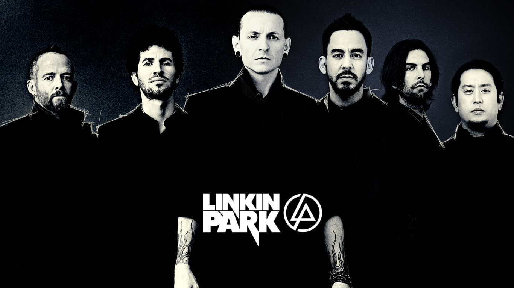

Chester Benington
1976 - 2017

Chester Bennington- third from left- on the cover photo with the band members of
Linkin Park
Though being the lead vocalist in Linkin Park Chester has left his mark on the world with various other projects and contribution to different albums. Bennington is widely regarded as one of the top rock musicians of the 2000s. Hit Parader magazine placed him at number 45 on their list of the "100 Metal Vocalists of All Time"
- 2002 - Wonderful(Live) {with Stone Temple Pilots}
- 2002 - System
- 2004 - Rock N' Roll (Could Never Hip Hop Like This) (Part 2) {with various artists}
- 2005 - Walking Dead {z-trip}
- 2006 - Morning After (Julien-K Remix)
- 2008/2010 -Hunger Strike {with Chris Cornell}
- 2010 - Riders in the Storm